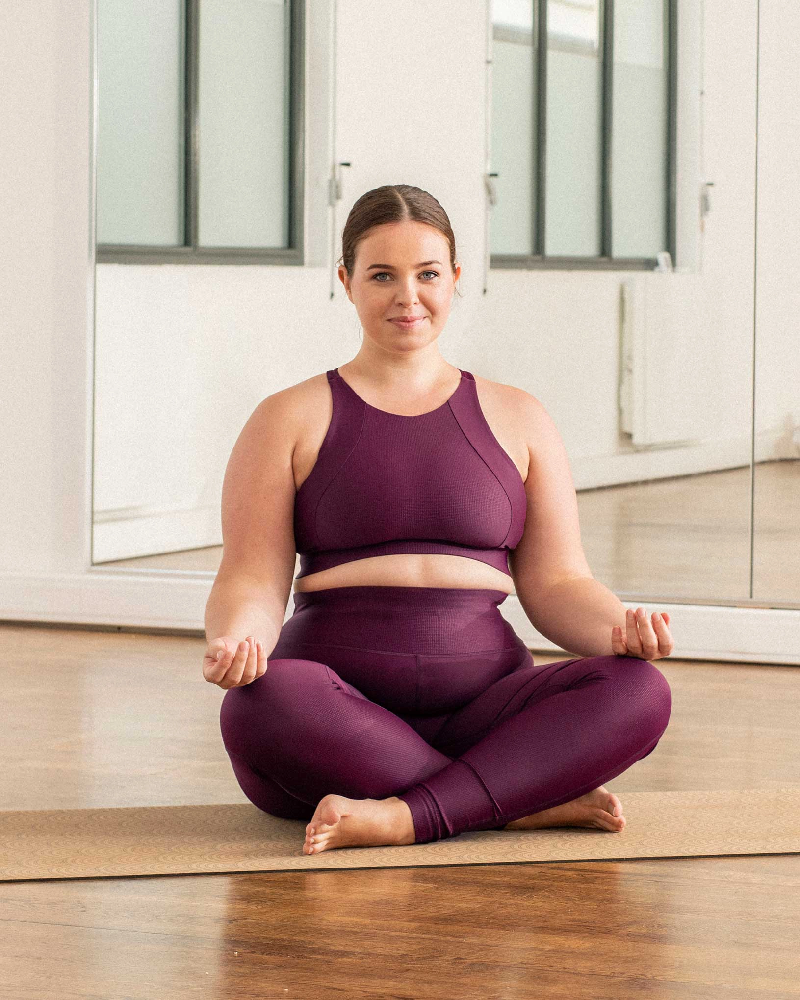

Yoga with Us
Le lotus
Position : assise, jambes en tailleur, idéalement les pieds posés sur les cuisses. Bras relâchés presque tendus, mains déposées sur les genoux, paumes vers le ciel, index et pouce pincés en "chin mudra" (attitude de la sagesse ou de la conscience). Bienfaits de cette position de yoga : Concentration et calme.
Janu Sirsasana
Position : Variante de la pince avec une jambe tendue, pied flexe, l’autre repliée, pied contre l'aine de la cuisse opposée. Poignet enserré. Doigts de la main tenue en "chin mudra" (attitude de la sagesse ou de la conscience). Bienfaits de cette position de yoga : Etirement intense de tout l’arrière du corps, apporte tranquillité et apaisement.

Le guerrier
Position : Jambe avant fléchie, pied avant dans l’alignement du tapis. Jambe arrière tendue, pied arrière presque perpendiculaire au pied avant. BUste et bassin de face. Bras tendus, mains jointes en prière vers le ciel. Bienfaits de cette posture de yoga : Développe la cage thoracique, ouvre les hanches et renforce les jambes.

Grand étirement latéral
Position : Jambe avant pliée, genou au dessus du pied avant. Pied à l’avant dans l’alignement du tapis, pied arrière perpendiculaire au pied avant. Le coude du bras avant (opposé à la jambe pliée) vient se poser sur la face externe de la cuisse avant, main posée au sol. Bras arrière tendu vers le ciel. Bienfaits de cette figure de yoga : Etirement complet de la colonne vertébrale et de la jambe, renforce la capacité respiratoire, ouvre les épaules. Les torsions sont également bénéfiques à la détox.